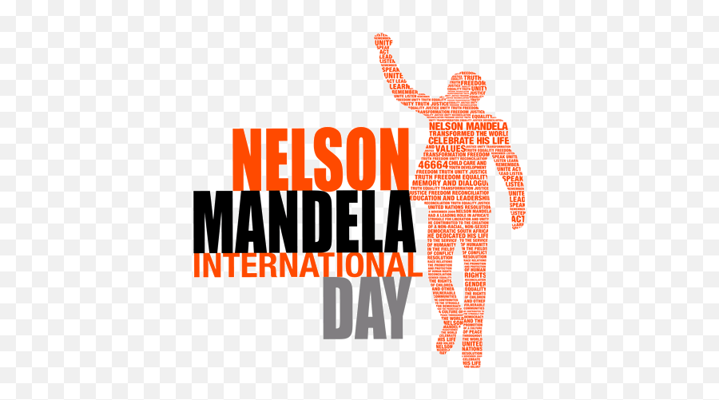

Mawande Sikibi

Which city?
Bahamas Island, CUBA(USA)
Bahamas is a cluster of numerous islands. islets,cay, and rocks. actually archipelago of more than 700 island, islets and cay and over 2400 rocks. However only 30 islands out of all inhabited, and about a dozen of them would be of interest to the tourists because these are the ones that behold all the colors and characters of the Bahamas from tourism perspective. All these island are located of the US East Coast and east of Miami,Florida. The nearest island Bimini is only about 50miles to the east of Miami while one of the farthest is Inagua (about 700 miles away )
Foreigh Languages
| ENGLISH PHRASE | SWAHILI | PHONETIC PRONUNCIATION |
|---|---|---|
| Hello / Goodbye | Jambo / Kwaheri | Yambo / Qwa..hear..ri |
| My name is Mawande | Jina langu ni Mawande | Gina lahngu nee Mawande |
| Pleased to meet you | Nimefurahi kukutana nawe | Nee..me..fuurahi kuku..tanah nawee |
| Thank you | Asante | Ahh..sa..te |
| Do you speak English | Unaongea kiingereza | Ouunahomgeaaa kiingereza |
Historical Places
THE OLD MOMBASA
Mombasa has a lont?history and has always been an important port on the Indian Ocean Trading Routes. The first town was probably built over 1,000 years ago. This pre-Islamic settlement, according to local tradition, was on ruled by a Queen called Mwana Mkisa, who lived at Map of Mombasa taken from Livro do Estado da India Oriental, a Portuguese publication Gongwa somewhere on the of 1646. It shows Fort Jesus. (size exaggerated), the Portuguese town separated from Island. Judy Aldrick relates the town of the Moors by a wall, and a fort at Makapu some oj the town 's historv.
AFRIKAANS MONUMENT
The monument was built on Paarl Mountain in Paarl, a town in the Western Cape province. It was unveiled in 1975. About 100 years earlier, a group of men in Paarl had begun working to promote Afrikaans. They founded a group called the Genootskap van Regte Afrikaners (“Society of Real Afrikaners”).>
CASTLE OF GOOD HOPE